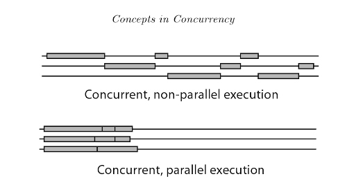
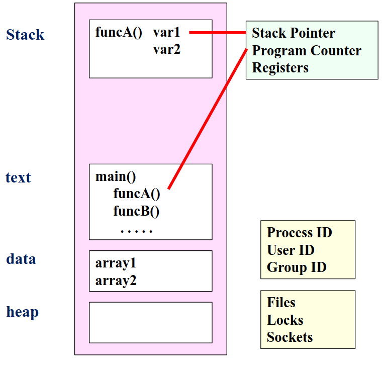
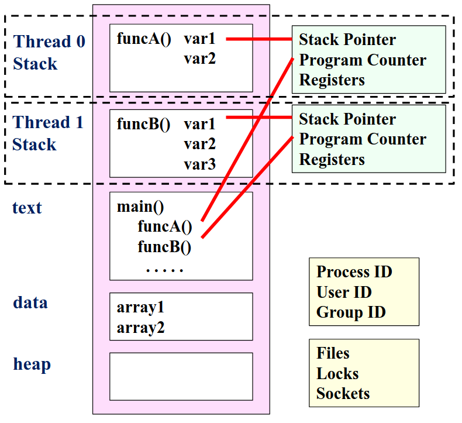
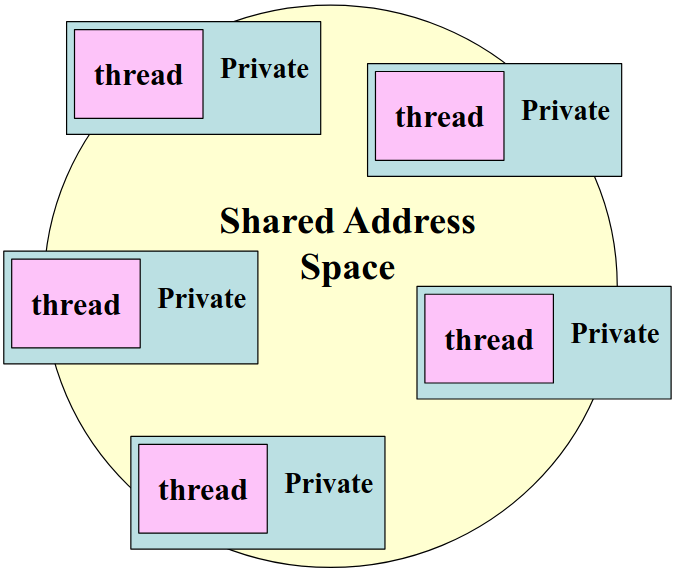
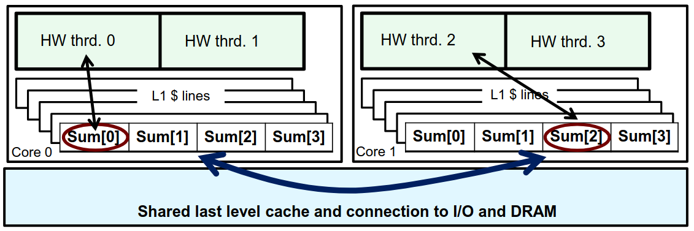

OpenMP 笔记 Pt.I
Table of Contents
(一共两篇，这是第一篇)
1. Concurrency VS Parallelism
1.1. 定义
Concurrency(并行): CPU 一次性 处理(logically active) 多个任务的能力
[A property of execution flows]
Parallelism(并发): 多个 CPU 同时 运行(actually active) 多个任务的能力
[A State of execution flows]
1.2. 图例

2. OpenMP: 一个开发多线程程序的 API
2.1. 基本信息
OpenMP construct 大部分是编译器指令，格式为:
#pragma omp construct [clause [clause]…]
其中，函数原型等定义在 omp.h 中
#include <omp.h>
2.2. 使用 OpenMP
使用 gcc 时，只需要加上 -fopenmp 就可以启用 OpenMP
gcc -fopenmp foo.c export OMP_NUM_THREADS=4 ./a.out
2.2.1. 第一个并发程序: Hello World example
#include <omp.h> // OpenMP include file #include <stdio.h> int main() { #pragma omp parallel num_threads(4) // Parallel region with 4 threads { int id = omp_get_thread_num(); // Runtime library function to return a thread ID printf("Hello World from thread = %d", id); printf(" with %d threads\n",omp_get_num_threads()); } // End of the Parallel region }
运行结果是:
./a.out Hello World from thread = 0 with 4 threads Hello World from thread = 1 with 4 threads Hello World from thread = 3 with 4 threads Hello World from thread = 2 with 4 threads
2.2.2. 线程的互动方式
2.2.2.1. 共享内存计算机
- 对称多处理器 (SMP)
SMP 中，所有处理器共享相同的地址空间，每个处理器对内存的访问是"等时 (equal-time)"的，且操作系统以相同的方式对待每个处理器
- 非一致性内存访问多处理器 (NUMA)
NUMA 中，内存被分成不同的区域: "近"内存和"远"内存 (远近指与特定处理器的物理距离), 处理器访问近内存的速度更快，而访问远内存的速度较慢
2.2.2.2. 单线程与多线程


- 单线程：所有执行都在一个栈上，内存结构更简单
- 多线程：每个线程有自己的栈指针和 PC，允许并发执行
所以，对于一个程序:
- 它有一个进程和很多个线程
- 线程互动是通过对共享内存空间的读写操作
- OS 的调度器决定线程的运行顺序
- 多个线程可能同时访问共享数据，同步机制可以确保在任何时刻只有一个线程可以访问共享资源

2.2.3. OpenMP 的系统概述
OpenMP 是多线程共享地址模型
- 线程通过共享变量进行通信
数据的意外共享会导致竞争：
- 竞争条件：当程序的结果因线程调度的不同而发生变化
为了控制竞争条件：
- 使用同步机制来保护数据冲突
由于同步开销较大，因此：
- 最好改变数据的访问方式，以最小化对同步的需求
3. OpenMP 的功能探索
3.1. 创建线程
3.1.1. Fork-join 并行计算模型
- 在 Fork-Join 模型中，通常有一个主线程，负责管理并行任务的执行
当主线程需要进行并行计算时，它会分叉出一组子线程
master ---------- /__________\ / sequential \ ----- ----- \ sequential / ----------
3.1.2. 在 OpenMP 中创建线程
- 方法一
#include <omp.h> // OpenMP include file #include <stdio.h> int main() { int a = 1; /* Each thread executes a copy of the code within the structured block*/ omp_set_num_threads(4); //Runtime function to request a certain number of threads #pragma omp parallel { int id = omp_get_thread_num(); // Runtime library function to return a thread ID foo(a, id) // for ID = 0 to 3 } // End of the Parallel region return 0; }
- 方法二
#include <omp.h> // OpenMP include file #include <stdio.h> int main() { int a = 1; /* Each thread executes a copy of the code within the structured block*/ #pragma omp parallel num_threads(4) // clause to request a certain number of threads { int id = omp_get_thread_num(); // Runtime library function to return a thread ID foo(a, id) // for ID = 0 to 3 } // End of the Parallel region return 0; }
3.1.3. 线程执行
|
a = 1
|
|
omp_set_num_threads(4)
|--------|--------|--------|
foo(a,0) foo(a,1) foo(a,2) foo(a,3)
|--------|--------|--------|
| <-- Threads wait here for all threads to finish before proceeding (barrier)
return 0
|
3.1.4. 编译器在干什么?
考虑这个 construct:
#pragma omp parallel num_threads(4)
{
foo();
}
编译器会将它变成以下的程序:
void thunk () { foo(); } pthread_t tid[4]; for (int i = 1; i < 4; ++i) pthread_create ( &tid[i],0,thunk, 0); thunk(); for (int i = 1; i < 4; ++i) pthread_join (tid[i]);
OpenMP 使用线程池机制，所以在并行区域内，线程是从一个预先创建的线程池中获取的
在上例中，只有三个线程被创建，因为最后一个并行线程是由主线程调用的
3.1.5. 用 OpenMP 来优化定积分计算 example
考虑以下定积分:
\(\int_0^1 \frac{4.0}{(1 + x^2)} dx = \pi\)
根据定积分的几何意义，我们可以写出一个 naive 的计算实现:
static long num_steps = 100000; double step; int main () { int i; double x, pi, sum = 0.0; step = 1.0/(double) num_steps; for (i=0;i< num_steps; i++) { x = (i+0.5)*step; sum = sum + 4.0/(1.0+x*x); } pi = step * sum; }
接下来我们试着使用 OpenMP 来简单优化这个程序
#include <omp.h> static long num_steps = 100000; double step; #define NUM_THREADS 2 int main() { int i, nthreads; double pi, sum[NUM_THREADS]; step = 1.0/(double) num_steps; omp_set_num_threads(NUM_THREADS); #pragma omp parallel { int i, id, nthrds; double x; id = omp_get_thread_num(); nthrds = omp_get_num_threads(); if (id == 0) nthreads = nthrds; for (i=id, sum[id]=0.0;i< num_steps; i=i+nthrds) { x = (i+0.5)*step; sum[id] += 4.0/(1.0+x*x); } } for(i=0, pi=0.0;i<nthreads;i++)pi += sum[i] * step; }
其中使用的一些技巧:
int i, nthreads; double pi, sum[NUM_THREADS];
在这里将原先的标量 sum 提升为了一个有进程数个元素的 Array，以避免竞争
(每个线程都有自己独立的 sum[id] , 避免多个线程同时写入同一内存位置的情况。每个线程只更新自己对应的 sum 元素)
for (i = id, sum[id] = 0.0; i < num_steps; i = i + nthrds)
循环分配 ：每个线程从自己的 id 开始，以 nthrds 为步长进行迭代，确保了每个线程处理不同的循环迭代，从而避免数据冲突
(a common trick in SPMD programs)
if (id == 0) nthreads = nthrds;
针对全局变量的优化: nthreads 是一个全局变量，多个线程可能会同时写入它，导致竞争条件
于是在代码中，只允许一个线程来更新 nthreads , 从而避免多个线程同时写入同一地址
3.1.5.1. 什么是 SPMD ?
SPMD (Simple Program Multiple Data) 即单程序多数据的算法设计策略
Concepts
- 单程序: 在 SPMD 模式下，所有核心运行相同的程序, which means 代码是统一的，所有处理单元执行相同的指令
- 多数据: 每个处理单元处理不同的数据集，通过不同的输入数据，处理单元可以独立执行任务
Rank
处理单元都有一个标识符，称为 Rank，通常是从 0 到 P−1 的整数 (So P 是处理单元的数量)
3.1.6. 虚假共享: 对定积分程序再次优化
虚假共享是指多个线程在不同的内存位置上进行写操作时，这些内存位置恰好位于同一个缓存行中
现代处理器使用缓存来提高数据访问速度，当一个线程更新某个数据时，整个缓存行会被标记为无效，导致其他线程需要重新从主内存加载这个缓存行，从而引发性能下降

所以我们之前对 sum 的提升带来了很大的问题!
double sum[NUM_THREADS];
数组的元素在内存中是连续存放的，这意味着它们可能会共享同一个缓存行 (尤其是在数组元素较小的情况下)
3.1.6.1. 那怎么办? 填充数组!
如果我们通过某种方式使得数组的元素之间有足够的空间，确保每个元素位于不同的缓存行中
那么，每个线程在更新自己的数据时，就不会干扰到其他线程的数据
具体来说，在数组中插入额外的空元素就可以 (就这么简单…)
#include <omp.h> static long num_steps = 100000; double step; #define NUM_THREADS 2 #define PAD 8 // assume 64 byte L1 cache line size int main() { int i, nthreads; double pi, sum[NUM_THREADS][PAD]; step = 1.0/(double) num_steps; omp_set_num_threads(NUM_THREADS); #pragma omp parallel { int i, id, nthrds; double x; id = omp_get_thread_num(); nthrds = omp_get_num_threads(); if (id == 0) nthreads = nthrds; for (i=id, sum[id]=0.0;i< num_steps; i=i+nthrds) { x = (i+0.5)*step; sum[id][0] += 4.0/(1.0+x*x); } } for(i=0, pi=0.0;i<nthreads;i++)pi += sum[i][0] * step; }
问题圆满解决…了吗?
填充数组需要CPU架构相关的知识，学习成本高；其次，如果程序被移植到缓存行大小不同的CPU上，那么优化就有可能变成负优化…
3.2. 同步机制
之前在 OpenMP 的系统概述中提到:
为了控制竞争条件：
- 使用同步机制来保护数据冲突
所以使用同步机制可以用一个 universal 的方式解决之前遇到的问题
3.2.1. 两种最常见的同步方式
- Mutual Exclusion
当一个线程想要进入可以访问共享资源的代码块时，它必须首先获得锁
一旦获得锁，其他线程就无法进入临界区，直到持有锁的线程释放它
- Barrier
Barrier 要求所有参与的线程在某个特定点上停下来，直到所有线程都到达这个点
|
a = 1
|
|
omp_set_num_threads(4)
|--------|--------|--------|
foo(a,0) foo(a,1) foo(a,2) foo(a,3)
|--------|--------|--------|
| <-- Threads wait here for all threads to finish before proceeding (barrier)
return 0
|
3.2.2. 其他的同步方式/一些例子
3.2.2.1. 高阶同步
- critical
- atomic
- barrier
- ordered
3.2.2.2. 底层同步
- flush
- locks
3.2.2.3. Barrier
#pragma omp parallel { int id=omp_get_thread_num(); A[id] = foo1(id); #pragma omp barrier // stops here B[id] = foo2(id, A); }
3.2.2.4. Critical (Mutual Exclusion)
float res; #pragma omp parallel { float B; int i, id, nthrds; id = omp_get_thread_num(); nthrds = omp_get_num_threads(); for (i=id;i<niters;i+=nthrds) { B = big_job(i); #pragma omp critical // Threads wait for their turns res += consume (B); } }
3.2.2.5. Atomic (Mutual Exclusion)
Atomic 是一种特殊的同步机制，当多个线程需要对同一个变量进行更新时，使用 Atomic 可以确保每次更新都是安全的
#pragma omp parallel { double tmp, B; B = DOIT(); tmp = foo1(B); #pragma omp atomic X += tmp; }
在 OpenMP 中，Atomic 中的语句必须是以下几种形式之一：
x binop= exprx++: 自增操作++x: 前置自增x--: 自减操作--x: 前置自减
3.2.3. 利用同步机制优化定积分程序
3.2.3.1. Critical
#include <omp.h> static long num_steps = 100000; double step; #define NUM_THREADS 2 int main() { int i, nthreads; double pi; step = 1.0/(double) num_steps; omp_set_num_threads(NUM_THREADS); #pragma omp parallel { int i, id, nthrds; double x, sum; // Create a scalar local to each thread to accumulate partial sums id = omp_get_thread_num(); nthrds = omp_get_num_threads(); if (id == 0) nthreads = nthrds; for (i=id, sum=0.0;i< num_steps; i=i+nthrds) { x = (i+0.5)*step; sum += 4.0/(1.0+x*x); } #pragma omp critical pi += sum * step; //Must protect summation into pi in a critical region so updates don’t conflict } }
3.2.3.2. Atomic
#include <omp.h> static long num_steps = 100000; double step; #define NUM_THREADS 2 int main() { int i, nthreads; double pi; step = 1.0/(double) num_steps; omp_set_num_threads(NUM_THREADS); #pragma omp parallel { int i, id, nthrds; double x, sum; // Create a scalar local to each thread to accumulate partial sums id = omp_get_thread_num(); nthrds = omp_get_num_threads(); if (id == 0) nthreads = nthrds; for (i=id, sum=0.0;i< num_steps; i=i+nthrds) { x = (i+0.5)*step; sum += 4.0/(1.0+x*x); } sum = sum * step; #pragma omp critical pi += sum; //Must protect summation into pi in a critical region so updates don’t conflict } }
添加同步机制的代码块时，需要小心逻辑错误，例如上面两个情况中，如果将最后的求和放入循环内部会导致读写冲突 (Use your brain)
3.2.4. SMPD vs. Worksharing
先前我们提到了 SMPD 单程序多数据的设计思想，但还有另外一个想法叫做 Worksharing，顾名思义便是共享线程之间工作，避免某些线程过载而其他线程空闲的情况发生
3.2.5. Worksharing constructs
OpenMP 为 C/C++ 提供了 for 作为 Loop construct name
#pragma omp parallel { #pragma omp for for (I=0;I<N;I++) { foo(I); } }
默认情况下，变量 I 是 private 的，也可以通过 private(I) 来显式声明这一点
3.2.5.1. 有什么用?
少写就是赢!
- 未优化的代码:
for(i=0;i<N;i++) { a[i] = a[i] + b[i];}
- 只用
parallel优化的代码:
#pragma omp parallel { int id, i, Nthrds, istart, iend; id = omp_get_thread_num(); Nthrds = omp_get_num_threads(); istart = id * N / Nthrds; iend = (id+1) * N / Nthrds; if (id == Nthrds-1)iend = N; for(i=istart;i<iend;i++) { a[i] = a[i] + b[i];} }
- 使用
Worksharing Loops优化的代码
#pragma omp parallel #pragma omp for for(i=0;i<N;i++) { a[i] = a[i] + b[i];}
代码复杂度和长度直线下降，而且优化后的代码非常符合直觉
3.2.5.2. 调度子句
调度子句影响循环迭代如何映射到线程上
schedule(static [,chunk])
将循环的迭代静态地分配给线程，分配的块大小由参数 chunk 指定；每个线程获得一个固定大小的迭代块，直到所有迭代都被分配
#pragma omp for schedule(static, 10) for (int i = 0; i < N; i++) { // 处理十个迭代 }
schedule(dynamic [,chunk])
每个线程在完成其当前任务后，会去获取下一个任务，这样可以更好地适应迭代时间不均匀的情况
#pragma omp for schedule(dynamic, 5) for (int i = 0; i < N; i++) { // 每个线程处理5个迭代，动态获取 }
schedule(guided [,chunk])
线程动态地抓取迭代块，块的大小从大到小逐渐减小，直到达到 chunk 的大小
#pragma omp for schedule(guided, 10) for (int i = 0; i < N; i++) { // 每个线程动态获取迭代块，块大小逐渐减小 }
schedule(auto)
抛弃大脑让程序自己选
#pragma omp for schedule(auto) for (int i = 0; i < N; i++) { // 调度策略由运行时决定 }
3.2.6. Working with Loops
在 OpenMP 中，以下两端代码是等价的:
double res[MAX]; int i; #pragma omp parallel { #pragma omp for for (i=0;i< MAX; i++) { res[i] = huge(); } }
double res[MAX]; int i; #pragma omp parallel for for (i=0;i< MAX; i++) { res[i] = huge(); }
3.2.6.1. 方法论
找到占用大量计算资源的循环
可以使用性能分析工具如
perf和gprof拆分循环，防止循环依赖的情况发生
如果存在依赖，可以使用临时变量或者修改算法来消除
- 最后添加 OpenMP 指令
例如对于这个简单的循环:
int i, j, A[MAX]; j = 5; for (i=0;i< MAX; i++) { j+=2; A[i] = big(j); }
在这段代码中，循环中一个依赖 j , 如果直接添加 OpenMP 指令，那么可能会有多个线程希望同时访问 j 的情况发生，造成性能下降
所以针对这个情况，优化应该这样进行:
int i, A[MAX]; #pragma omp parallel for for (i=0;i< MAX; i++) { int j = 5 + 2*(i+1); A[i] = big(j); }
3.2.6.2. 特殊情况之: 嵌套循环
对于嵌套循环，可以使用 collapse(n) 来让 OpenMP 进行优化:
#pragma omp parallel for collapse(2) for (int i=0; i<N; i++) { for (int j=0; j<M; j++) { ...... } }
原理 : 使用 collapse(2) 将两个循环合并为一个单一的循环，形成一个长度为 N×M 的循环
3.2.6.3. 特殊情况之: 规约
考虑以下求均值的程序:
double ave=0.0, A[MAX]; int i; for (i=0;i< MAX; i++) { ave + = A[i]; } ave = ave/MAX;
在这个程序中，每个循环迭代的结果依赖于前一个迭代的累积结果，这种依赖性使得我们不能简单地并行化这个循环
OpenMP 提供了对归约操作的支持，可以通过在并行化指令中添加 reduction 子句来处理归约操作
语法 : reduction (op : list)
以上程序可以优化为:
double ave = 0.0, A[MAX]; #pragma omp parallel for reduction (+:ave) for (int i = 0; i < MAX; i++) { ave += A[i]; } ave = ave / MAX;
原理 :
- 对于列表中的每个变量，OpenMP会为每个线程创建一个 local copy，并根据操作类型进行初始化，例如，使用 0 初始化用于 +，使用 1 初始化用于 *
- 每个线程在其局部副本上进行操作，例如，在加法归约中，线程会将数组 A 的元素加到它的局部副本中
- 当所有线程完成计算后，OpenMP会将每个local copy的结果合并为一个单一值，与原始的全局变量结合